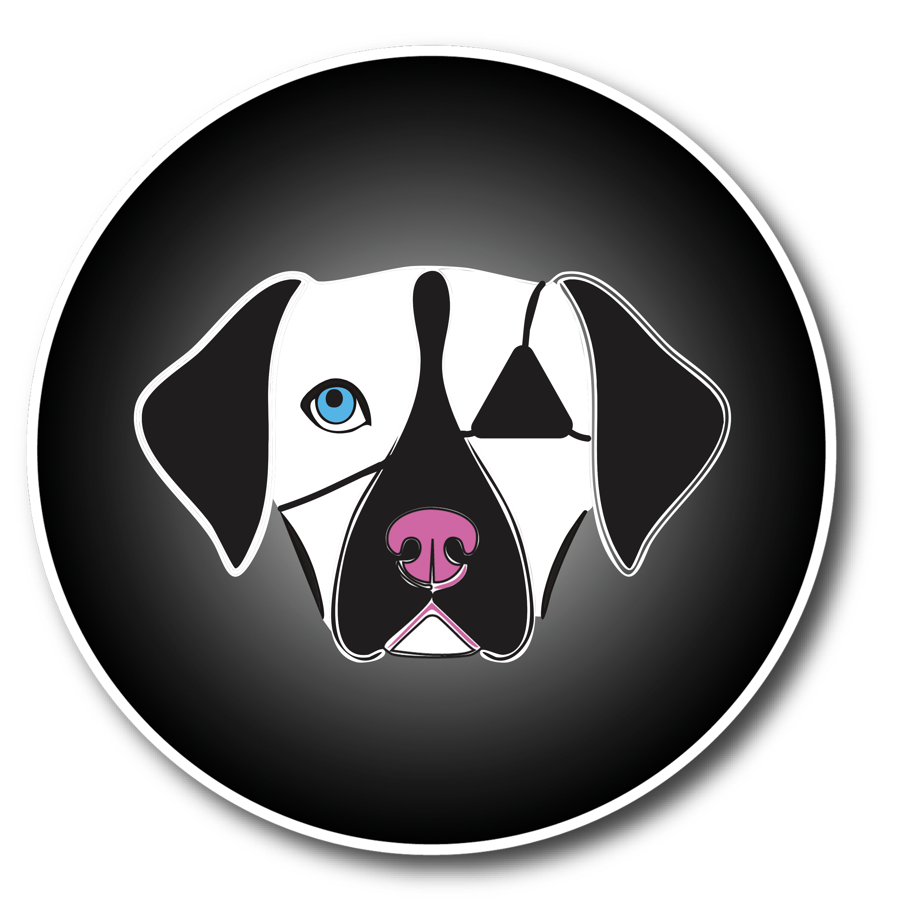

SOFTWARE
Adobe After Effects
Adobe Illustrator
Adobe InDesign
Adobe Photoshop
Blender
Microsoft Word
MY ROLE
Independent Brand Strategist
Environmental Designer
Marketing & Visual Communications
Packaging Designer
DELIVERABLES
Brand Identity System
Environmental Design
Menu & Print Design
Digital Design
Brand Guidelines
TOOLS & CREDITS
Envato Elements (licensed subscription assets & mockups)
A BRAND WITH HEART
Good Food. Good Company. Second Chances.
A neighborhood café and specialty ice cream concept bringing people together over good food while helping senior dogs find loving homes. The identity balances warmth, wit, and a little mischief across hospitality, merchandise, and marketing.


FROM IDENTITY TO EXPERIENCE
The Brand in Use
A flexible visual identity connects merchandise, menus, promotional campaigns, and the everyday café experience.


THE BIGGER PICTURE
Business Concept & Proposal
A proposed café and ice cream destination designed around neighborhood hospitality, memorable food, and meaningful second chances for senior dogs.


Explore all seven proposal pages. Select any page to read its key ideas.
STRATEGIC HIGHLIGHTS
A Café with a Purpose.
- A distinctive hospitality concept. Café, ice cream parlor, and senior-dog mission in one destination.
- Food-led business model. Creative food and drinks give guests a reason to visit and return.
- Dog-first experience. Retreat areas, outdoor access, and responsible adoption practices prioritize animal welfare.
- Clear audience and positioning. A warm, witty neighborhood brand for café regulars, dog lovers, and food explorers.
- Connected brand ecosystem. Menus, apparel, promotions, and environmental design work as one experience.
- Community with purpose. Transparent support options invite guests to contribute without pressure to donate or adopt.
This is a conceptual business and spatial proposal, not an operating business plan or approved architectural design.
BRINGING THE BRAND TO LIFE
An Animated Brand Story
An animated brand advertisement follows the Old Dog Café mascot through a nighttime park before discovering the café. The concept uses character, atmosphere, and motion to bring the brand's personality to life.
Let's create a brand that feels like home.
CONTACT ME